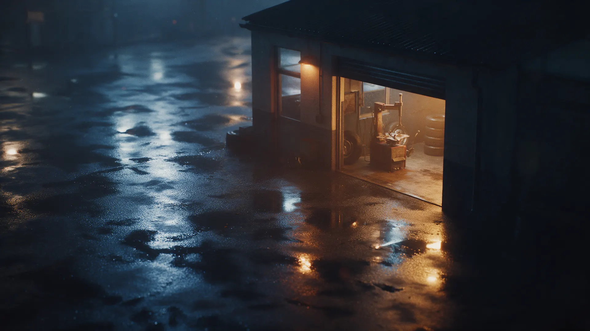
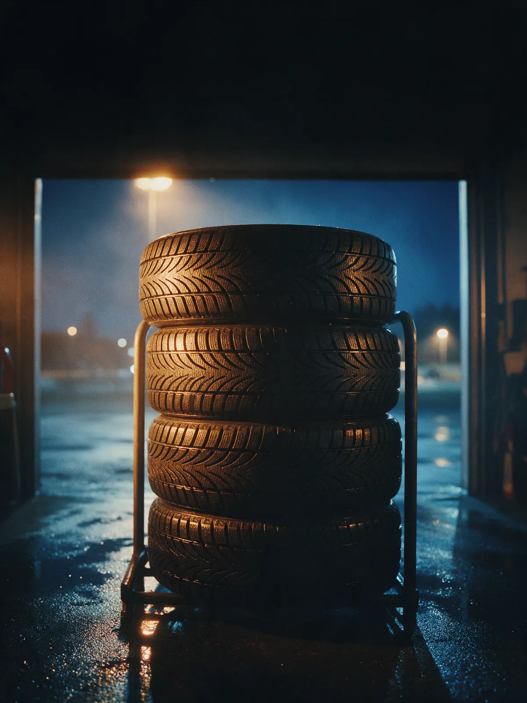
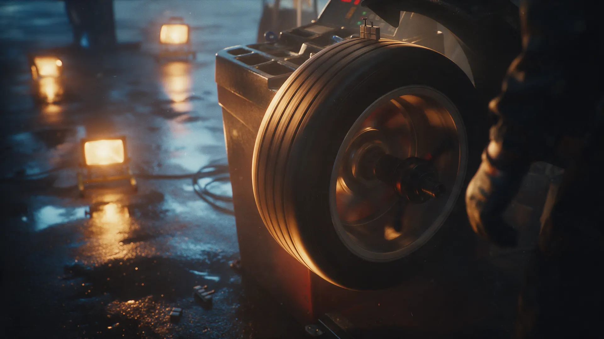
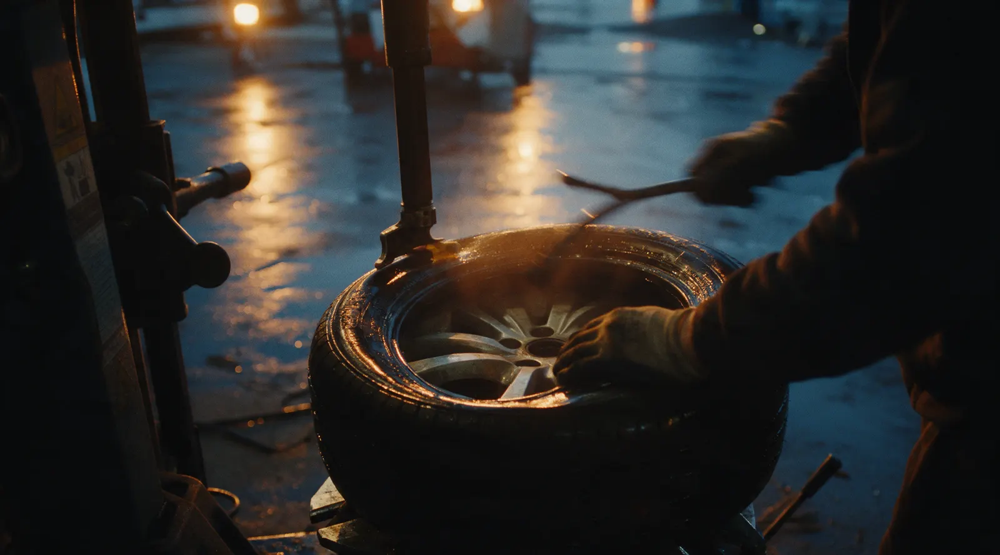

Шиномонтаж · Екатеринбург
Шиномонтаж в Екатеринбурге – берём и необычные колёса
Краснолесья, 12А. От легкового колеса до детской коляски. Позвоните перед выездом – подскажем, когда подъехать.
- Берём и нестандартные колёса
- Время ожидания – 93 % положительных оценок
- Выездной шиномонтаж и хранение шин

Цены
Цен на карточке в Яндекс Картах нет. Стоимость назовём по телефону.
Легковые
- Шиномонтаж легкового автоуточнить
- Ремонт проколауточнить
- Подкачка колесауточнить
Другие работы
- Правка литых дисковуточнить
- Хранение шинуточнить
Как приехать
- 01
Выберите услугу и день
В форме вверху страницы: текст для звонка соберётся сам.
- 02
Позвоните
+7 (965) 548-45-10. Клиенты пишут: позвонили, договорились – и всё сделали.
- 03
Приезжайте на Краснолесья, 12А
Ищите вывеску «Шиномонтаж» над входом, площадка во дворе дома.



Что у нас есть
Берём и необычные колёса
В отзывах – колесо детской коляски и детский мотоцикл. Что ещё возьмём, уточняйте по телефону.
Быстро, по отзывам клиентов
Клиенты пишут: 15 минут – и всё готово. Время ожидания – 93 % положительных оценок (14 отзывов).
Выручают, когда колесо спустило
В отзывах: накачали компрессором, проверили давление в остальных колёсах, поставили жгут.
Грузовой, выездной шиномонтаж, хранение шин
Эти пометки есть на карточке. Условия и цены – по телефону.
Отзывы с Яндекс.Карт
«Спасибо ребятам. Пробил колесо на детской коляске. Ни один шиномонтаж не готов был это делать. Здесь сделали за пару минут. Взяли чисто символическую цену. Большое уважение и благодарность мастерам.»
Андрей Матвеев · 30 августа 2024
«Спустило колесо, не с того не с сего.... Компрессором накачали, доехала до шинки, сняли посмотрели, все четко сделали, проверили давление в других колёсах, рекомендую, недорого, быстро и качественно, спасибо !»
Карина Потапова · 5 января 2024
«Все быстро, чётко, 15 минут и все готово, цены приемлемые.»
Алексей · 8 октября 2024
Отзывы с карточки на Яндекс.Картах, без правок.
Приезжайте на Краснолесья, 12А
- Адрес
- Краснолесья, 12А, Екатеринбург
- Часы
- Уточняйте по телефону
- Телефон
- +7 (965) 548-45-10